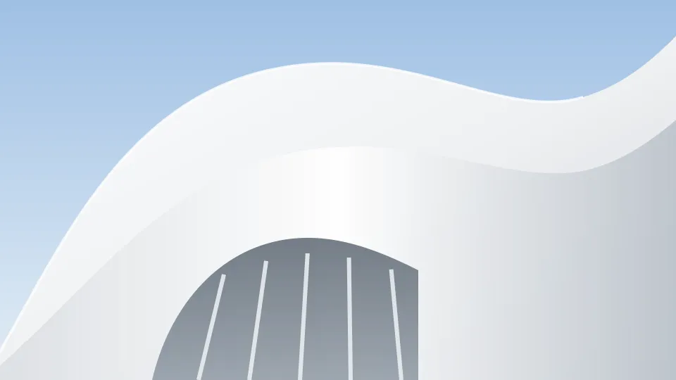
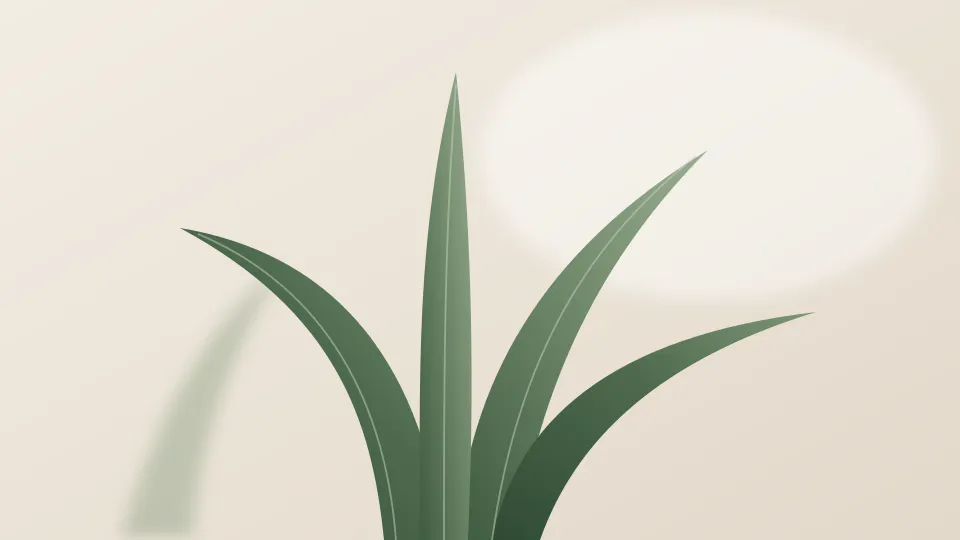
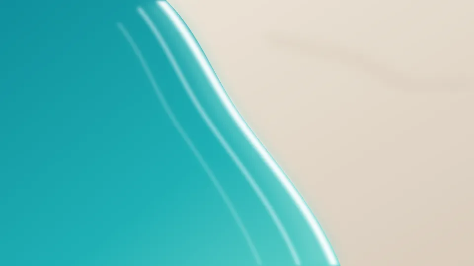

工作方式研究 · 今天 · 约 6 分钟阅读
让想法、判断和行动顺畅地连接起来。把 AI 放进已有的工作流程，帮助整理信息、减少重复步骤，并为下一步行动提供依据。

让想法、判断和行动顺畅地连接起来。把 AI 放进已有的工作流程，帮助整理信息、减少重复步骤，并为下一步行动提供依据。
三种方向已经整理好了。比起继续增加功能，我们更想先确认哪些内容应该留下，再围绕这个决定收拢页面结构，完成这周的方案。
AI 发现你收藏的两张卡在讨论同一件事

起身，看看窗外，让眼睛和肩膀都休息一会儿。十分钟后再回到桌面，接着处理还没做完的那件事，节奏会更稳。
这周读了 12 篇、收藏 5 篇，完成的待办比上周少两项。读到的想法不少，下周试着每天挑一件落到手上。


设计稿文件夹里有 3 个新文件。